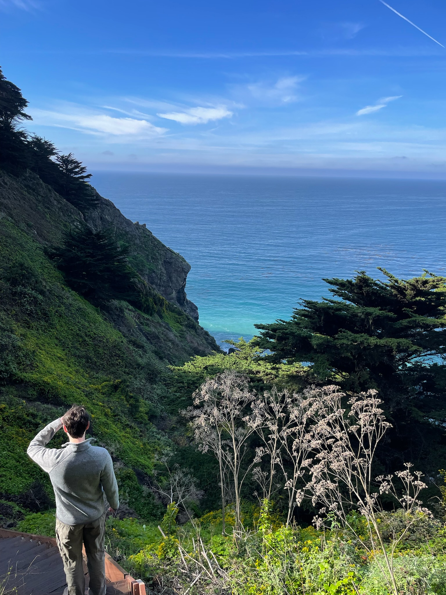
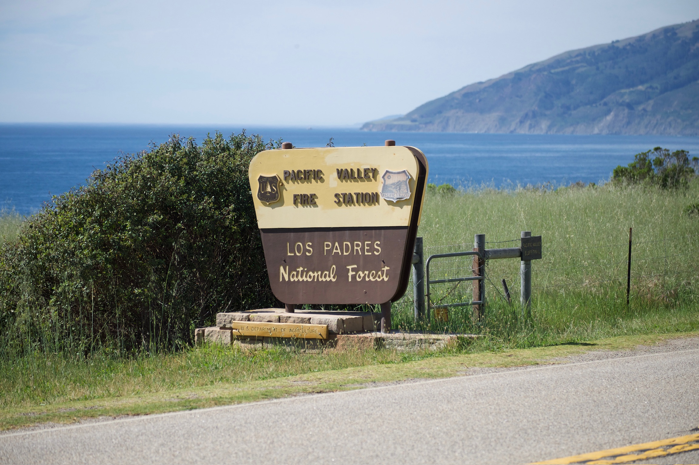
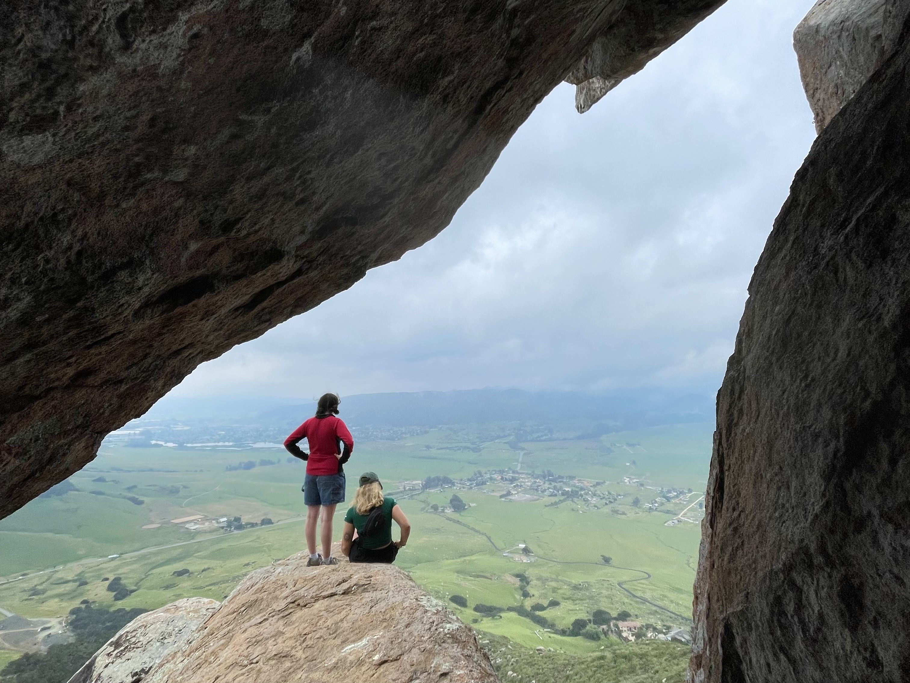
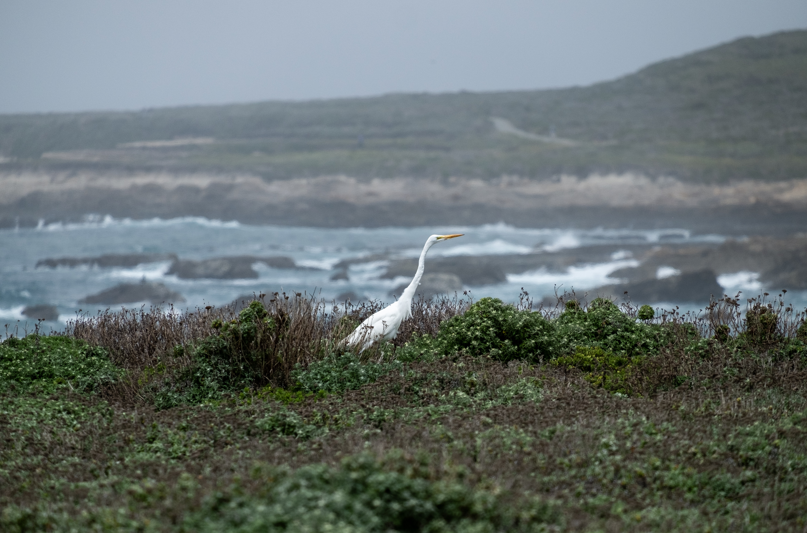
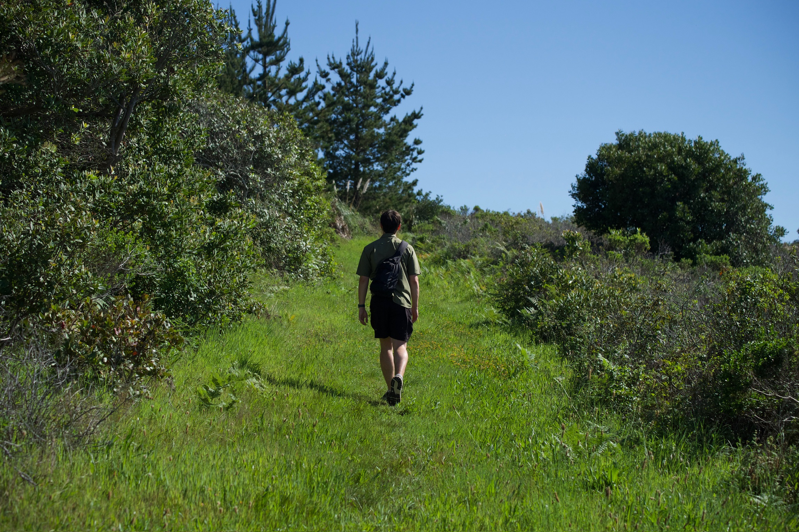
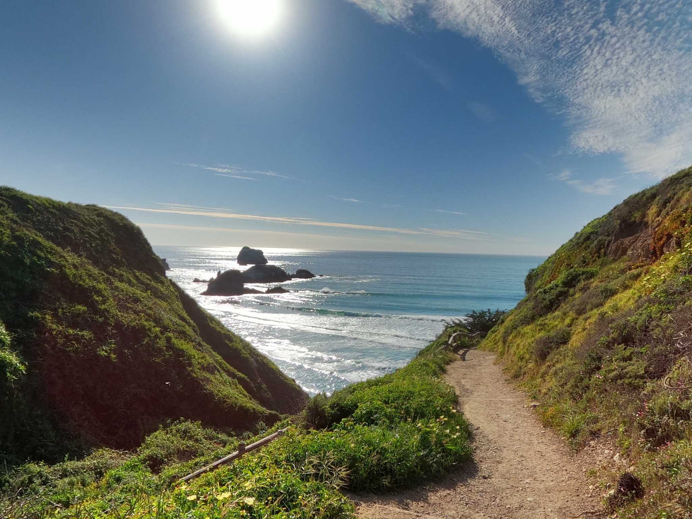

First Time on the Trail? Here's What You Need to Know
There's something undeniably exciting about lacing up your boots and stepping onto a trail for the first time—the fresh air, the quiet, the sense that adventure is just around the next bend. But hiking, like any outdoor pursuit, rewards those who come prepared. A few wrong turns (literally and figuratively) can turn a dream day out into an uncomfortable, or even dangerous, experience.
Whether you're planning a gentle walk through a local nature reserve or working your way up to something more ambitious, the right knowledge makes all the difference. From choosing the right footwear to understanding trail etiquette, these beginner-friendly tips will help you hit the ground running — or rather, hiking — with confidence.

The Best Campsites in Big Sur (And How to Actually Get a Spot)
Big Sur offers some of the most stunning campsites in California, from the redwood-shaded sites at Pfeiffer Big Sur State Park to the cliff-top ocean views at Kirk Creek Campground. For something wilder, Andrew Molera State Park puts you steps from the beach, while Limekiln State Park nestles campers among towering trees and historic lime kilns. Book early, these spots fill up fast!

Day Hikes in SLO County That Will Push Your Limits
San Luis Obispo County's trails are a well-kept secret, and they're not for the faint of heart. Valencia Peak (4.2 mi, 1,347 ft gain) delivers jaw-dropping coastal panoramas, while Bishop Peak (3.5 mi, 1,200 ft gain) is a rocky scramble rising straight from the city. For those who want more, Reservoir Canyon (5.35 mi) winds past a waterfall to a 360-degree summit, and the legendary Double Morro Challenge, which tackles both Bishop Peak and Cerro San Luis Obispo back-to-back, clocks in at over 3,300 ft of total gain. Think you've got what it takes to conquer SLO County's toughest trails? Read on to find out.

Local Wildlife to Keep an Eye Out For
SLO County's trails aren't just a workout. They're a front-row seat to some of California's most remarkable wildlife. Keep your eyes peeled for deer, bobcats, and coyotes on the inland trails, while the coast delivers an entirely different show. Sea otters, sea lions, and dolphins are common sights along the shore, and with luck, you might spot gray, blue, or humpback whales breaching offshore. Head toward Carrizo Plain and you're in condor country. But the showstopper? Nearly 17,000 elephant seals haul up on the beaches at Piedras Blancas twice a year, and seeing a 5,000-pound bull seal up close is something you won't soon forget.

Trail Etiquette Every Hiker Should Know
Nothing ruins a peaceful morning on the trail faster than someone who doesn't know the unwritten rules. From who has the right of way on a narrow switchback to how far from the trail you should step to let horses pass, trail etiquette is the difference between a great experience and an awkward one for everyone involved. Before you lace up your boots, here's what every hiker needs to know before hitting the trail.

The Best Time of Year to Hike the Central Coast
The Central Coast is one of the few places in California where you can hike comfortably year-round, but that doesn't mean every season is created equal. Spring brings wildflowers and mild temps, summer delivers long days and coastal breezes, and fall is arguably the sweet spot when crowds thin and the light turns golden. But there's one season most hikers overlook entirely, and it might just offer the best experience of all.